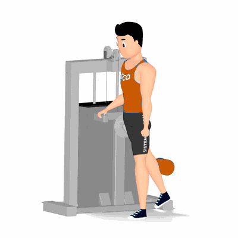

Glúteo no Apolete

Exercício de estímulo para o treinamento dos músculos do glúteo e posteriores da coxa, principalmente se o apoio for realizado na altura dos tornozelos. Dependendo da estatura do praticante, recomenda-se colocação de steps para o melhor ajuste do apoio próximo ao tornozelo.
Ficha Técnica
Tipo: Musculação
Grupo Muscular: Glúteo
Aparelho: Nenhum
Músculos: Nenhum
Como realizar
- Posicione ao lado do aparelho;
- O movimento poderá ser realizado com o apoio a altura do joelho ou mais abaixo próximo aos tornozelos;
- Manter uma das pernas apoiada ao solo;
- Com a posição ereta, realize a elevação de uma das pernas fazendo um movimento para trás, concentre todo o esforço no músculo trabalhado;
- No ponto mais alto, manter a contração muscular por um instante;
- Retorne à posição inicial e repita os movimentos.
 RC STORE
RC STORE